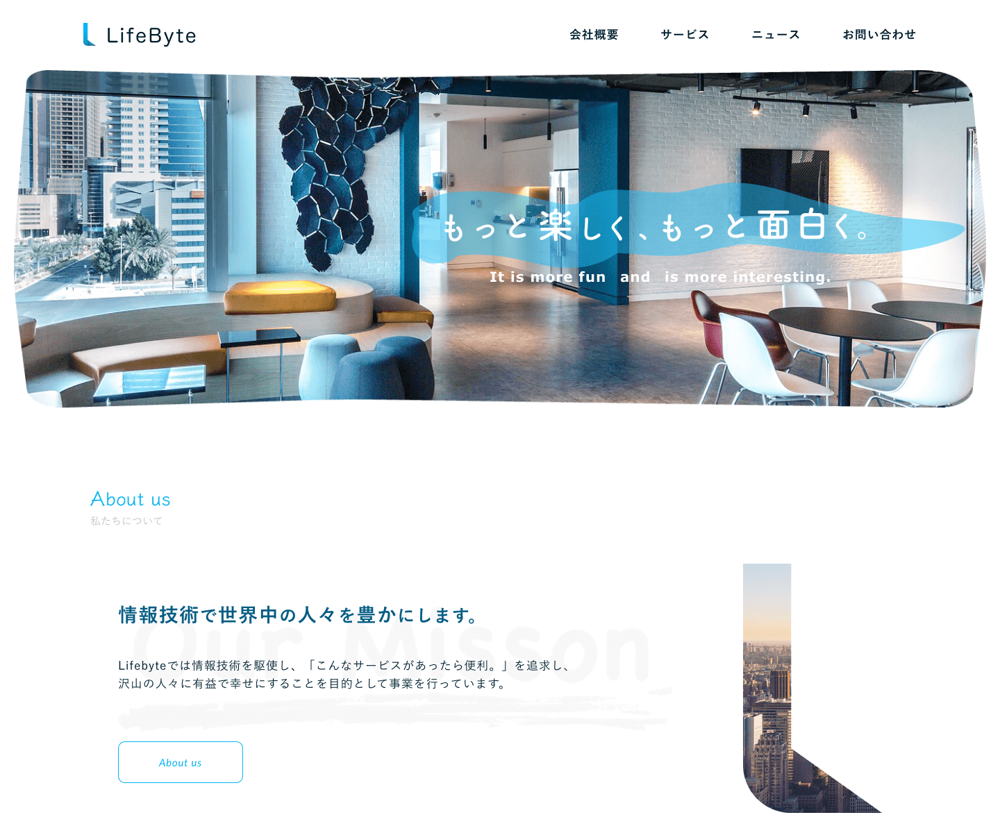

Make people smile through design.
WEBDESIGN


前職では決められた手順で作業していく「ルーティンワーク」をしていた私は自分で１から考え、計画し作り出す仕事に憧れ興味をもっていました。人の為に何かをするのが好き。自分の作ったもので誰かの役に立ち笑顔になって欲しい。というスタンスを持つ私は「Webデザイナー」がクライアントの要望を元に課題解決に導き、ユーザーにとって使いやすく分かりやすいデザインする仕事だと知り興味を持ちました。
趣味でPhotoshopとIllustratorを使って遊んでいます。